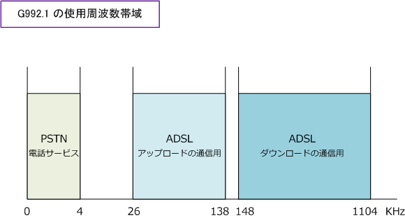
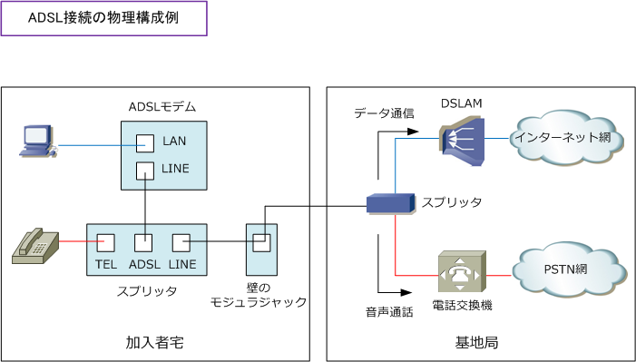
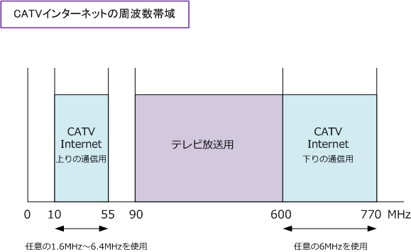
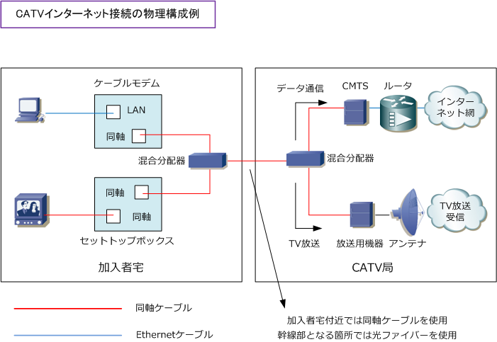

Internet - ADSL / CATV
インターネット接続 - DSLとは
DSL (Digital Subscriber Line) とは、デジタル加入者線のことでありツイストペアケーブルの通信経路で 高速デジタルデータ通信を行う技術です。先進国では電話線としても利用している既存のメタルケーブル （銅線）の加入者線を利用できるというメリットがあり、DSLには以下の通りいくつかの種類があります。 ※ ADSLとVDSLが上りと下りの速度が異なる非対称であり、HDSL、SDSL、IDSLは上りも下りも同じ通信速度の対称となります。
| DSLテクノロジー | 説明 |
|---|---|
| ADSL ( Asymmetric DSL ) | 下り(ダウンロード)の通信速度が1.5Mbps～50Mbps、上り(アップロード)の通信速度が 0.5Mbps～12Mbpsという通信方向により速度が異なる(Asymmetric)のDSL。実際の通信 速度は加入者と基地局の電話線の距離や品質に大きく影響される。基地局に近ければ 近いほど高速になる。ADSLを利用する場合、基地局との距離は約6kmくらいまでが限界。 |
| HDSL ( High-bit-rate DSL ) | 2対の回線を使用し、下りと上りともに同じ周波数帯域を使用するDSL。周波数帯域が 同じなので下りと上りともに同じ通信速度となりHDSLでは通信速度が最大2Mbpsとなる。 HDSLとSDSLは、POTSと共存しないため、電話と同時に利用することができないDSL。 |
| SDSL ( Symmetric DSL ) | 1対の回線を使用して下りと上りともに同じ周波数帯域を使用するDSL。周波数帯域が 同じなので下りと上りともに同じ通信速度となり、HDSLでは通信速度が最大2Mbpsとなる。 最大2Mbpsの速度の前提として基地局までの距離が2km以内。伝送距離の最大は7km。 |
| IDSL ( ISDN DSL ) | ISDN回線を使用したDSL。Dチャネルをシグナリングに使用しない場合は144Kbpsで通信可。 |
| VDSL (Very high bitrate DSL) | 下りが最大100Mbps、上りが最大40Mbpsの高速通信を実現したDSL。ADSL同様に非対称。 VDSLの場合は高い周波数帯を使用しているためノイズの影響を受けやすく長距離伝送に 適しておらず、基地局から1km以内ならVDSLが高速だがそれ以上ならADSLが高速となる。 |
どのDSL方式にも共通して言えることなのですが、加入者宅と電話の基地局(NTTなど)の距離が長くなる につれて信号が減衰することになりますし、ノイズ（雑音）が多くなり結果として通信速度が遅くなります。
インターネット接続 - ADSL
個人ユーザがインターネット通信を行う場合、Web閲覧やダウンロードなどが多く、通信方向としては 下りが多くなります。そのため、ADSLでは下図のように上り（Upstream）より、下り（downstream） の方に大きな通信帯域を割り当てて非対象(Asymmetric)としています。そのため、周波数帯域の割当が 下図のようになっています。ADSLでは「G.992.1」と「G.992.2」の2種類の規格で提供を行いました。 下図は G992.1 上り1Mbps(26～138kHz)、下り8Mbps(148～1104kHz) の周波数帯域を示しています。 ※ 音声通話のみ可能な0～4KHzの周波数帯の電話サービスをPOTS （ Plain Old Telephone Service）といいます。

インターネット接続 - ADSLの物理構成
加入者宅でADSL接続を行うためには、ADSLモデムとスプリッタが必要となります。使用するケーブルは PCとADSLモデム間はRJ45のLANケーブルとなり、それ以外の電話やLINE接続はRJ11の電話ケーブルと なります。PCを複数つなぎたい場合、ADSLモデムにPCを直結するのではなく、ルータを接続することも 可能であり、その場合は複数のPCがインターネット接続を行えます。加入者宅、基地局のスプリッタにて データ通信と音声通話を分離することが可能なので、電話をしながらインターネットをすることが可能です。 ※ DSLAM（Digital Subscriber Line Access Multiplexer）は複数のxDSL回線を束ねる集線装置。キャリア側のルータとも接続。

インターネット接続 - CATVインターネット
CATVインターネットは、テレビ放送で使用するCATV網を利用し提供されるインターネット接続サービスです。 CATVのネットワークでは、0～770MHzの間で信号がやり取りされるのですが、テレビ放送として実際に使用 している周波数帯は90MHz～600MHzの間です。CATVインターネットでは、上りで10MHz～55MHzの間から 任意の1.6M～6.4MHzを使用して下りで600MHz～770MHzの間から任意の6MHzを切り出し利用しています。

CATVインターネットの通信速度はCATVインターネットの出始めた頃は下り30Mbpsという速度でしたが 現在では下りで最大160Mbps、上りで最大10Mbpsというインターネット接続サービスもあります。CATV のインターネットの場合、ADSLのように加入者宅と基地局が遠ければ遠いほど遅くなるということはなく 加入者宅とCATV局が近くても遠くても同じ速度となります。ADSLでは加入者宅からはメタルケーブルを 使用するのに対して、CATVの場合は加入者宅から同軸ケーブル（ノイズ影響を受けにくい）を使用します。
インターネット接続 - CATVインターネットの物理構成
加入者宅でCATVインターネット接続を行うためには、ケーブルモデムと混合分配器とが必要となります。 使用するケーブルは、PCとケーブルモデム間はRJ45のLANケーブルとなり、それ以外のTVとセットトップ ボックスとの接続、ケーブルモデムと混合分配器との接続には、同軸ケーブルを使用します。セットトップ ボックス(STB)とは、テレビに接続することにより色々なサービスを受けられるようにする機器のことです。

加入者宅とCATV局との間では、上図にある通り 加入者宅付近では同軸ケーブルを使用し、幹線部 では現在、光ファイバーを使用しています。
このようにCATVインターネットでは同軸ケーブル による信号の伝送と、光ファイバーによる信号の 伝送を組み合わせて使用しており、この形態の ことをHFC（Hybrid Fiber Coaxial）と言います。
なお、PCから送出するデータはケーブルモデムと CATV局にあるCMTS（Cable Modem Terminaltion System）によりデータの変調と復調が行われます。